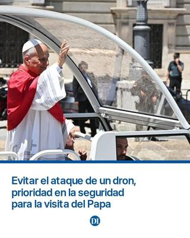

La visita de siete días del papa León XIV a España, del 6 al 12 de junio de 2026, ha sido presentada oficialmente como una misión «espiritual» destinada a «relanzar la fe» en un país históricamente católico, que atraviesa un acelerado proceso de secularización. El lema escogido, «Alzad la mirada», invita a los españoles a dirigir sus ojos hacia horizontes más elevados. Sin embargo, para muchos ciudadanos la pregunta inmediata no apunta hacia el cielo, sino hacia algo mucho más mundano: ¿Cuánto cuesta todo esto y quién lo paga? ¿Se justifica todo ese gasto?


La cifra oficial difundida por los organizadores para la logística del evento, es de 25 millones de euros (total estimado y cerrado por la Conferencia Episcopal Española, CEE), que cubre la instalación de escenarios, pantallas, megafonía y la gestión de los eventos en las cuatro sedes[1], más los gastos de seguridad de 80 millones de euros, que fueron confirmados oficialmente por la portavoz del Gobierno, Elma Saiz[2]. Sólo para la seguridad del Papa, el Ministerio del Interior movilizó a más de 14.000 agentes a nivel nacional, en un dispositivo que blindó las cuatro paradas oficiales del pontífice a lo largo de sus 2.500 kilómetros de ruta: Madrid, Barcelona, Las Palmas de Gran Canaria y Santa Cruz de Tenerife[3][4]. Se trata de un gigantesco dispositivo de seguridad desplegado, con miles de agentes, controles especiales, vigilancia aérea, unidades antiterroristas y recursos extraordinarios, durante varios días.
Pero la cuestión más interesante no es tanto cuánto cuesta exactamente cada partida, sino de dónde sale el dinero. Los organizadores destacan que una parte importante es financiada por la Iglesia Católica. Técnicamente es cierto. Pero conviene recordar que la Iglesia no imprime dinero en los sótanos del Vaticano, y que su amplia estructura clerical tampoco produce recursos de ninguna clase. Todos sus recursos provienen de donaciones, aportaciones de fieles, patrimonio acumulado y mecanismos de financiación que, directa o indirectamente, nacen del trabajo y los bolsillos de personas reales que realmente trabajan y producen.
Ahora, la parte sufragada por las administraciones públicas es aún más clara. Los fondos destinados a seguridad, servicios públicos y logística institucional, proceden de los presupuestos estatales, autonómicos y municipales. Es decir, de los impuestos pagados por los ciudadanos. Católicos, protestantes, musulmanes, judíos, agnósticos, ateos e indiferentes colaboran por igual, aunque no todos compartan el mismo entusiasmo por el evento. En otras palabras, al final todo el dinero utilizado en la visita procede de la sociedad trabajadora, de una forma u otra.
Y aquí surge una pregunta incómoda: España no atraviesa precisamente una época de abundancia. Los problemas económicos constituyen la principal preocupación personal para cerca del 39 % de la población. Más de 12 millones de personas se encuentran en riesgo de pobreza o exclusión social. Más de 2,5 millones de menores viven en situaciones de vulnerabilidad económica[5]. Y la sanidad pública continúa figurando entre las principales inquietudes ciudadanas. Por lo que, ante este panorama, resulta inevitable preguntarse qué otras prioridades podrían haberse financiado con una cantidad semejante.
Ciento cinco millones de euros entre logística y seguridad, podrían contribuir a reforzar programas de alimentación infantil, ampliar ayudas de emergencia para familias vulnerables, mejorar servicios de salud mental, contratar personal sanitario adicional o fortalecer programas de atención social. Con esta cantidad de dinero podrían financiarse, por ejemplo:
Miles de becas de comedor escolar para menores vulnerables.
Programas de atención psicológica y salud mental en escuelas públicas.
La construcción o rehabilitación de viviendas sociales.
Refuerzos de personal sanitario en centros de atención primaria.
Ayudas de emergencia para familias en riesgo de exclusión.
Programas de acogida y protección para menores en situación de pobreza severa.
No se resolverían todos los problemas estructurales del país, por supuesto, pero para miles de personas representarían una diferencia tangible y medible en su vida cotidiana. Claro, los defensores de la visita responderán que los beneficios no son únicamente religiosos (porque hay que ver también el evento como un negocio). Ellos hablan de impacto económico, turismo, proyección internacional y fortalecimiento del tejido social. Y son argumentos legítimos que merecen consideración. Sin embargo, conviene también observar que esta gira posee objetivos que favorecen sólo a la Iglesia Católica, y que van mucho más allá de «la espiritualidad»: la constante disminución de la práctica religiosa en España constituye uno de los principales desafíos. Cada generación muestra niveles menores de identificación religiosa y una presencia más reducida en parroquias y organizaciones eclesiales. Y desde esa perspectiva, la visita papal puede verse también como una operación de comunicación institucional, como una campaña de revitalización de marca, y como un intento de recuperar influencia cultural y social en un entorno cada vez más secularizado.
A ello se suman las importantes dimensiones políticas de la gira. León XIV ha intervenido en debates relacionados con la polarización política, la inmigración, las negociaciones sobre el Valle de los Caídos y las compensaciones a víctimas de abusos sexuales cometidos por miembros del clero. Por tanto, lejos de limitarse a cuestiones espirituales, el viaje refleja la participación activa del Vaticano en asuntos sociales, diplomáticos e institucionales, que son de su interés particular.
Pero detengámonos en la cuestión de la seguridad: aquí la realidad ofrece una de esas ironías que la sátira apenas necesita exagerar. Un líder religioso que es considerado por millones como el representante de «Dios» en la Tierra, y que por tanto, debe gozar de una especial protección divina, paradójicamente moviliza miles de agentes armados, sistemas de vigilancia, controles de acceso, inteligencia policial y dispositivos antiterroristas para garantizar su integridad física. Por supuesto, desde una perspectiva racional esto tiene perfecta lógica. El Papa es una figura pública mundial, y existen amenazas reales que justifican medidas de protección extraordinarias. Pero desde una perspectiva teológica, la imagen resulta contradictoria. Si alguien ocupa el cargo de representante de un «Dios» omnipotente en la Tierra, parecería razonable esperar algún nivel de confianza en los recursos de seguridad celestiales. Sin embargo, la práctica demuestra que los organizadores depositan una fe mucho mayor en la Policía Nacional, la Guardia Civil y los equipos de inteligencia, que en la intervención directa de los ángeles custodios.
Tal vez la lección involuntaria de la visita sea precisamente esa: incluso las instituciones más «espirituales», terminan dependiendo de soluciones profundamente terrenales. Mientras tanto, millones de ciudadanos continúan enfrentando problemas muy reales relacionados con el empleo, la vivienda, la sanidad y la pobreza. Son dificultades que no desaparecen con discursos solemnes, ceremonias multitudinarias ni visitas papales, por inspiradoras que éstas puedan resultar para una parte de la población.
Quizá la pregunta fundamental no sea si la visita merece realizarse, sino si una sociedad democrática debe debatir con mayor transparencia cuánto está dispuesta a invertir en este tipo de acontecimientos, y cuáles son las prioridades colectivas que desea colocar, precisamente, en el centro de su mirada.
[Godless Freeman]
[Crédito de imagen: Diario de Ibiza]
Comentarios
Comments powered by Disqus